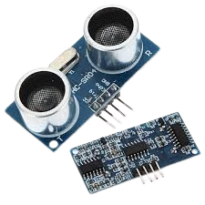

L298N
Driver para motores DC y paso a paso, ideal para controlar motores N20 con Arduino.
Precio: Q60 GTQ
Arduino UNO

Placa de desarrollo microcontrolador basada en ATmega328P, perfecta para proyectos electrónicos.
Precio: Q150 GTQ
Motores N20 - Motores DC Miniatura
Motores eléctricos compactos y eficientes, usados en robots y pequeños dispositivos.
Precio: Q80 GTQ
Jumpers - Cables de Conexión para Proyectos Electrónicos

Cables de conexión para protoboards y placas, esenciales para prototipos electrónicos.
Precio: Q70 GTQ
Sensor Ultrasónico
Sensor para medir distancia mediante ondas ultrasónicas, común en robótica y automatización.
Precio: Q120 GTQ
Llantas de carrito de juguete
Juego de llantas pequeñas ideales para robots y vehículos a escala.
Precio: Q90 GTQ
Motorreductores amarillos

Motorreductores compactos con carcasa amarilla, usados para control preciso de velocidad y torque.
Precio: Q20 GTQ
Arduino Nano

Placa microcontroladora pequeña y versátil, ideal para proyectos con espacio limitado.
Precio: Q125 GTQ
ESP-32

Módulo potente con WiFi y Bluetooth integrado, perfecto para proyectos IoT y conectividad inalámbrica.
Precio: Q450 GTQ
L293D

Driver de puente H para controlar motores DC y paso a paso con facilidad y eficiencia.
Precio: Q20 GTQ
Sensor de luz

Sensor que detecta niveles de luz ambiental, útil para automatización y proyectos de iluminación.
Precio: Q35 GTQ